T&Q Application Review: End-to-End Walkthrough
Understanding the generated UX application — navigate by exact section and page number alongside this guide.
The generated T&Q Spoke app is the main working environment for sales planners, sales ops, and admins. This walkthrough follows the app's 13-section structure. Every heading references the exact UX page path — navigate to those pages in the template app as you follow along. Note: section ordering doesn't follow a perfect planning sequence — V3 will introduce a more persona-driven layout.
You should have access to the T&Q V2 template app with fictitious data in your partner workspace. Use this to explore each section as you read through this walkthrough. Search for "V2" in your Anaplan apps list.
Section 01. Overview (Landing) Dashboards
Navigate to Section 01 → 1.1 Home
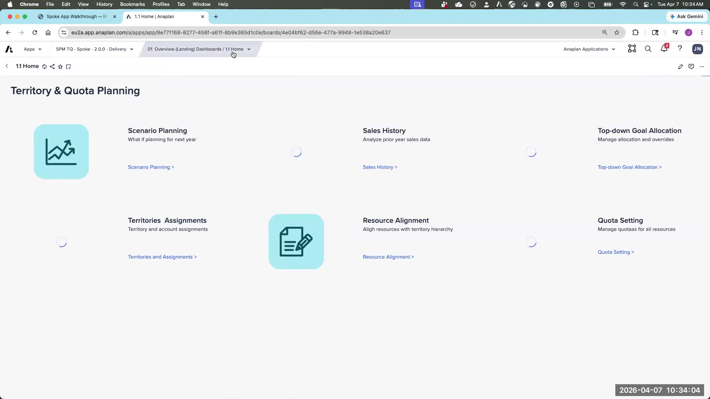
Section 01 serves as the landing zone and navigation aid for business users. It contains three pages: Home/directory, plus two pre-built dashboards for first-line and second-line sales managers showing key metrics across their hierarchy.
- Two sample dashboards included out of the box (Level 1 and Level 2 manager views)
- These are conversation starters, not finished products — use them to ask "what does your ideal dashboard look like?"
- Common extension: custom dashboards tailored to the customer's KPIs and hierarchy levels
- Don't present these as final — frame them as the starting baseline
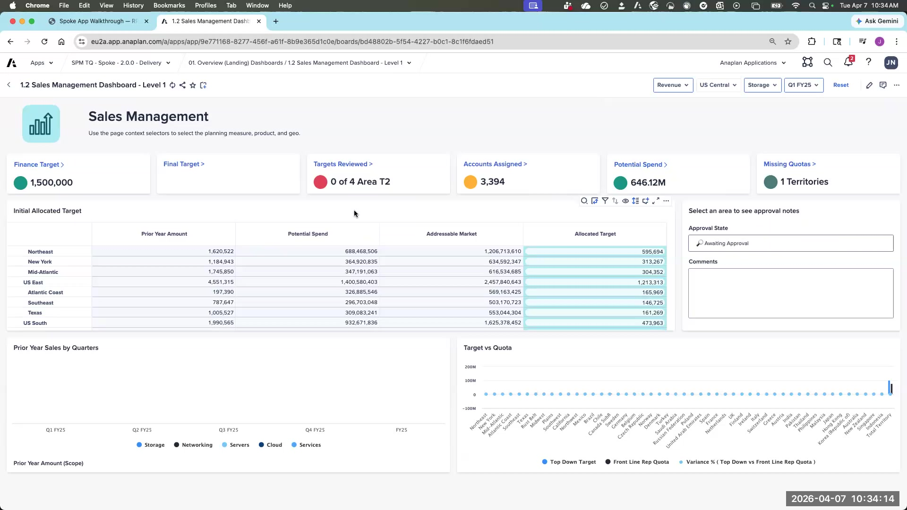
Section 2. Historical Sales & Account Information
Navigate to Section 2 → 2.1 Historical Sales Analysis
Section 2 covers three pages: historical sales data, addressable market by account, and account info with segment override. This section validates that transactional data (Orders, Opportunities) is loading correctly and linking to accounts. The primary purpose is data validation during model readiness — confirming the pipeline matches what the customer sees in their CRM.
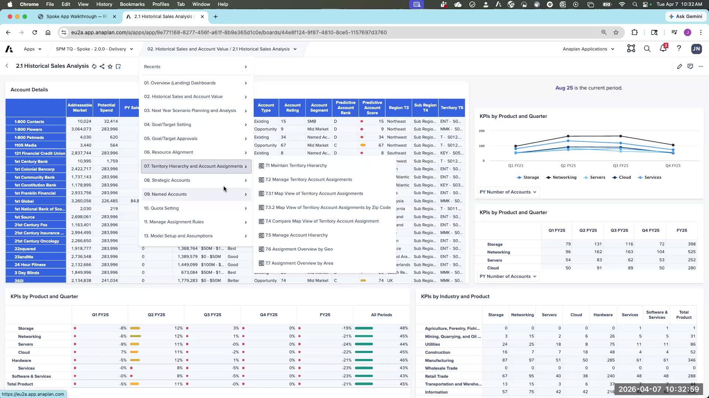
Navigate to Section 2 → 2.1 Addressable Market
This is the landing spot for segmentation outputs from the Anaplan Segmentation app. Two key fields:
- Initial Account Segment: The segment as defined by the segmentation process or imported from CRM
- Override Account Segment: Manual override capability for planners
Even if the customer just has a segment attribute in Salesforce today, the Addressable Market page is a great place to show the value of the Segmentation app. You can say: "This attribute you have today — here's what a full, data-driven segmentation process would look like, and how it feeds directly into T&Q."
Navigate to Section 2 → 2.3 Account Info + Segment Override
Account-level information and the segment override field. Segment is a key attribute — it flows through assignment, target allocation, and quota composition. The override here allows planners to correct a segment before it propagates downstream.
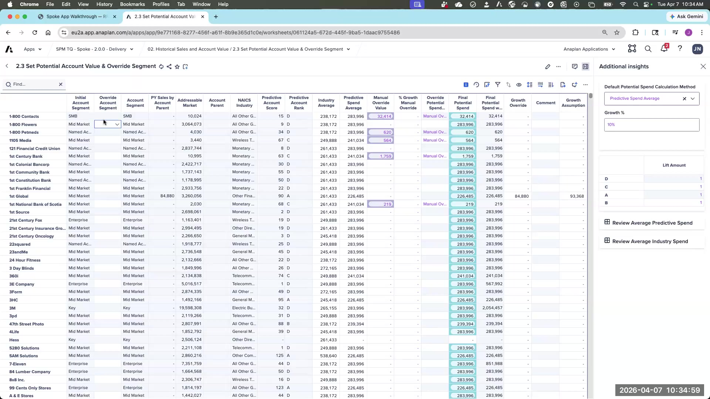
Potential Spend
Potential Spend is the primary out-of-box allocation method — targets cascade down the hierarchy proportionally based on each territory's Potential Spend. It's built from a combination of:
- Manual override: Admin-entered values per account
- Industry average: Benchmark values by industry segment
Section 3. Scenario Planning
Scenario planning allows planners to compare different account-to-territory assignment configurations before committing. This section also houses the Optimizer.
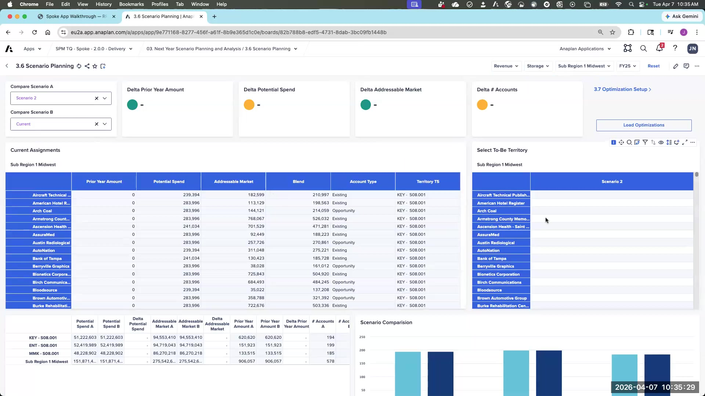
Navigate to Section 3 → 3.6 Account Assignment Scenario Comparison
Select two scenarios (A and B) to compare side-by-side. As you move accounts between territories in a scenario, the delta is highlighted automatically. Key metrics compared:
- Number of accounts per territory
- Pipeline / addressable market value
- Potential spend distribution
This page is also the landing spot for Optimizer results — after running the Optimizer, you import results into a scenario here and compare against the current state before committing.
Navigate to Section 3 → 3.7–3.9 Optimizer Setup
The Optimizer is one of the most powerful — and least-used — Anaplan platform capabilities. The T&Q app provides it out-of-the-box, configured through the Configurator. Key concepts:
Scopes: Geographic boundaries within which accounts can be moved. You can't run the optimizer across your entire hierarchy at once — define scopes like "Americas West" or "California Sub-Region."
Runs per Scope: Each scope can have up to 2 optimization runs with different objectives or constraints.
Geography Constraint vs. Balance Level: These are not the same thing:
- Geography Constraint: The tier within which accounts are allowed to move (e.g., within a Region — accounts can cross sub-regions but not cross regions)
- Balance Level: The tier at which territories should be balanced relative to each other (e.g., balance within Sub-Region — territories in the same sub-region should be roughly equal)
- Balance level should never be set higher than the geography constraint level
Objectives: The metric to balance across territories. Defaults: Potential Spend, Addressable Market, Pipeline Amount. You can add custom objectives via the Configurator.
Constraints per territory: Min/max account count, segment mix requirements. Use with care — conflicting constraints will cause the Optimizer to fail.
The Optimizer ranks all accounts within the scope by the objective metric, then distributes them across territories in a round-robin fashion while respecting constraints. It achieves balance — not true mathematical optimization. Territory 1 gets the highest-value account, Territory 2 gets the second-highest, etc. The result is roughly equal territories, not revenue-maximized territories.
A single account whose addressable market exceeds the combined total of all other accounts will make the Optimizer infeasible. Exclude these outliers from the run using the account exclusion settings, or mark them as "preserve existing assignment."
The Optimizer runs in a satellite spoke model — separate from the main spoke — to avoid freezing the model for other users during execution. Runs take a few minutes. This is intentional design, not a bug.
Confirm Plan
Once you've reviewed a scenario and are satisfied, use Confirm Plan to commit it as the current account-to-territory assignment. This replaces the live assignment state.
Section 4. Target Setup
Navigate to Section 4 → 4.1 Load Targets through 4.8 Cascade Targets
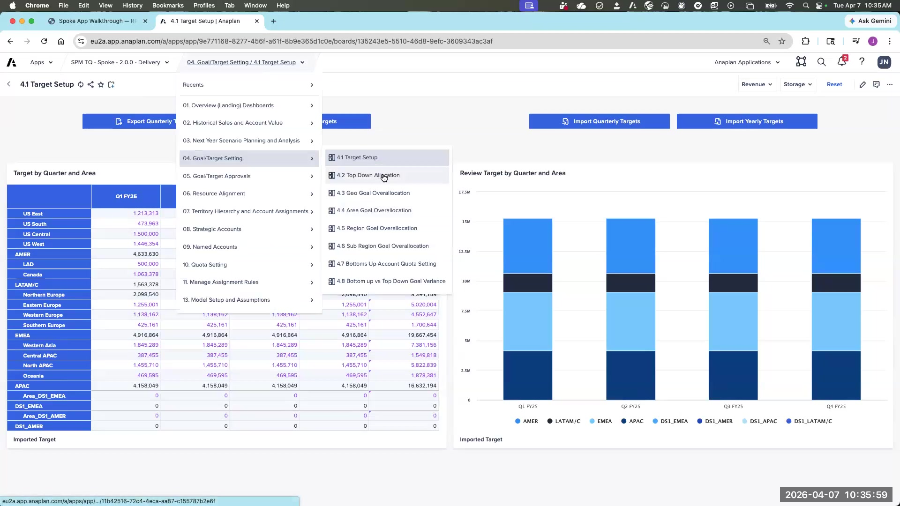
Section 4 has 8 pages covering the full target setting process — loading finance targets at the top level and cascading them to the territory level. This mirrors what was configured in the Configurator.
Navigate to Section 4 → 4.1 Load Targets — Finance Import
Finance provides targets at the time granularity specified in the configurator (annual, quarterly, or monthly) at the defined import level (e.g., at the Region level). The import view and action are generated based on your Configurator settings:
- Import level: the tier where targets enter the system
- Time granularity: annual, quarterly, or monthly — as configured
- Dimensions: Planning measures + optional product/BU if configured
Note: Export actions are not generated out of the box (there's nothing to export until targets exist). Add export actions post-generation as needed.
Navigate to Section 4 → 4.2–4.8 Cascade Targets — Allocation Method
Once targets are imported at the top level, the allocation method cascades them down to the leaf-level territory. Three default methods are available (configured in the Configurator):
- Potential Spend: Distribute proportionally to each territory's potential spend value
- Prior Year Actuals: Distribute proportionally to last year's bookings/performance
- Pipeline Amount: Distribute proportionally to current pipeline
You can select one or combine multiple. A common extension is weighted blending — allowing admins to set a percentage weight for each method (e.g., 60% prior year, 40% pipeline).
Over-allocation & Override
Over-allocation: A percentage uplift applied at each level below the import level. For example, if T5 (leaf) targets total $9.3M, and you set 10% over-allocation at T5, then T4 (the parent rollup) targets become $10.2M. This accounts for attrition and ramp.
Override: A hard number entered at a specific level, superseding the over-allocation calculation. V3 allows overrides at every level; V2 allows override at only one configured level.
When both are set, the override wins. Override is a deliberate, explicit number. Over-allocation is a systematic uplift. Be clear with customers about which mechanism to use when.
Navigate to Section 4 → 4.7 Bottoms-Up Quota Setting
Page 4.7 allows planners to set targets from the bottom up — reps and managers propose their own quota from the territory level, which then rolls up. This can be used alongside the tops-down cascade: Finance sets the top-level target, planners cascade down, and then reps have a bottoms-up input that can be compared or blended with the tops-down allocation.
Section 5. Approvals
Navigate to Section 5 — 4 sub-pages covering the full approval workflow
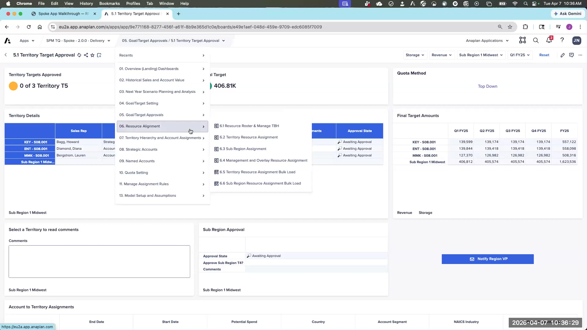
Section 5 manages the approval of finalized targets. Once managers approve targets at their level, those values become read-only for their direct reports. This is enforced via Dynamic Cell Access (DCA) — a native Anaplan mechanism that locks cells based on role and approval state.
The approval workflow flows bottom-up:
- Leaf-level territory targets are approved first
- Approval rolls up level by level to Area and Region
- Once a level is approved, users at that level cannot edit the values — re-opening requires admin action
- Approval triggers email notifications to sales roles with email addresses on file
Design DCA roles carefully to control who can approve at each level. Ensure the customer understands the approval sequence before go-live — re-opening an approved level requires admin intervention.
Section 6. Resource Setup (People)
Navigate to Section 6 → 6.1 People Roster
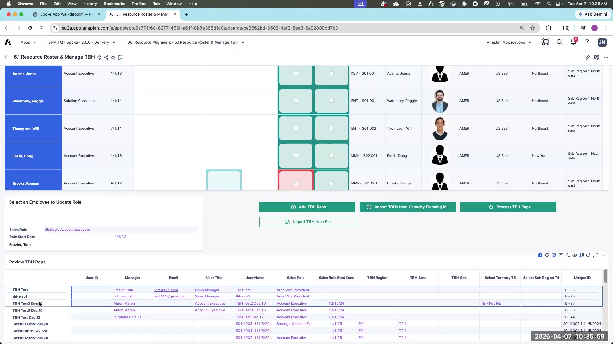
Section 6 has 6 pages covering the people side of planning: who your reps are, where they're assigned, and how they're organized. This section is critical to both quota calculation and integration with other apps.
Navigate to Section 6 → 6.1 People Roster + TBH
The People Roster shows all current employees and their roles. The TBH (To Be Hired) functionality within this page is a key integration point with the Capacity Planning app.
TBH reps are employees that capacity planning has identified as future hires — they exist in the model before an actual person is assigned. When the Capacity Planning app outputs a headcount plan, those planned hires flow into T&Q as TBH records, allowing quota and territory assignment planning to proceed before actual recruitment completes. This is a powerful cross-app story.
Navigate to Section 6 → 6.2 Rep-to-Territory Assignment
Navigate to Section 6 → 6.3 Manager Assignment
Navigate to Section 6 → 6.4 Overlay Assignment
Initialization: Used at the start of a planning year or when onboarding new employees. Filters by role and assignment status; creates effective-dated assignment records.
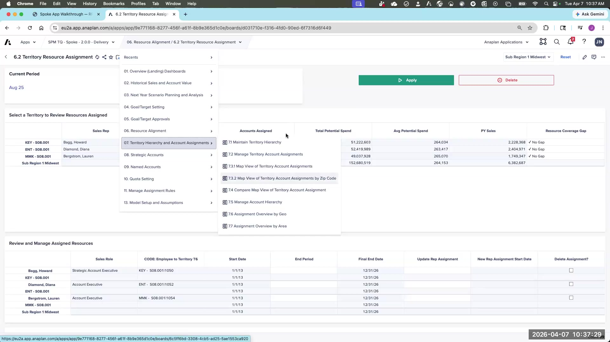
Assignment Updates: For in-year changes:
- Select the territory and the departing employee
- Set the end date for the current assignment
- Optionally set a replacement with a start date
- Clicking Apply automatically creates a new effective-dated record for the replacement
Under-assignment flagging: If a territory has no assigned rep for part of the year, the app flags it. This represents quota leakage — a territory with a target but no one covering it.
Over-assignment flagging: If two reps cover the same territory simultaneously, the app flags the overlap for admin review.
Overlay assignment: For non-frontline roles (product specialists, solution engineers, etc.) assigned at higher hierarchy levels. Configured in the Admin Setup page; the corresponding input area appears once enabled.
Section 7. Territory Hierarchy & Account Assignments
Navigate to Section 7 → 7.1 Territory Hierarchy
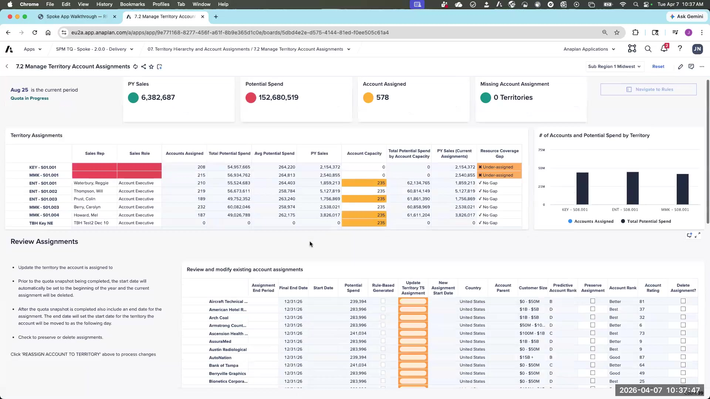
Section 7 covers territory structure management and all account assignment methods. Multiple pages: 7.1 (hierarchy), 7.2 (manual assignment), 7.3 (map/lasso), 7.5–7.7 (additional assignment pages).
Navigate to Section 7 → 7.1 Territory Hierarchy — Territory Management
Manage the territory hierarchy structure — add new territories, retire existing ones, change parent assignments (reparenting).
- Changes apply immediately to the active hierarchy
- When reparenting a territory, child territories do not automatically move (extension available for "child follows parent" behavior)
- Retiring a territory: end-date the territory and reassign its accounts and reps
V3 Enhancement — Current vs. Planning Hierarchy:
- V3 introduces a current hierarchy (from ADO, read-only) and a planning hierarchy (editable copy for next year's design)
- Run the "Initialize Planning Hierarchy" action once per year to create a copy of current into planning
- V3 includes comparison pages showing what changed between current and planning — great for year-over-year review with leadership
Navigate to Section 7 → 7.2 Manual Account Assignment
The most straightforward approach. A summary view shows all accounts assigned to a selected territory, along with the assigned rep and key KPIs (pipeline, potential spend, addressable market).
- Modify existing assignments: Change territory, set end date for in-year moves
- Assign unassigned accounts: A lower grid shows all orphaned/unassigned accounts — select and assign to any territory
- Best for: small-scale adjustments, one-off account moves, initial assignment when there's no existing data
Navigate to Section 7 → 7.3 Geo Mapping (Lasso)
Visualize account locations on a map and lasso-select groups of accounts for assignment. Requires latitude and longitude attributes on account records.
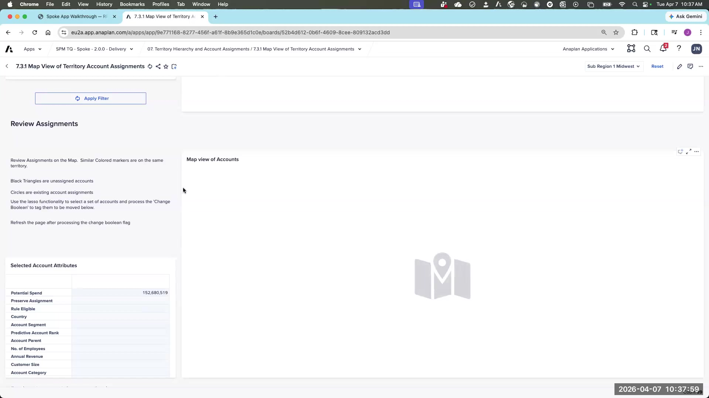
- Select the entity type to display (assigned accounts, unassigned accounts)
- Draw a lasso around a geographic cluster
- Double-click to close the selection
- Review the selected accounts in the grid below, then assign or modify
Clear lasso memory before demoing this feature — the widget can retain previous selections and behave unexpectedly. Test it before showing a customer. Also confirm the customer has lat/long data on their accounts before leading with this feature.
Navigate to Section 7 → 7.5–7.7 Additional Assignment Pages
Pages 7.5 through 7.7 provide additional account assignment workflows — use these for bulk reassignment, territory-level views, and assignment reconciliation. Explore these pages in the template app during the lab.
Sections 8 & 9. Strategic Accounts / Named Accounts — Optional: Advanced Topics
Section 10. Quotas
Navigate to Section 10 — individual seller quota management
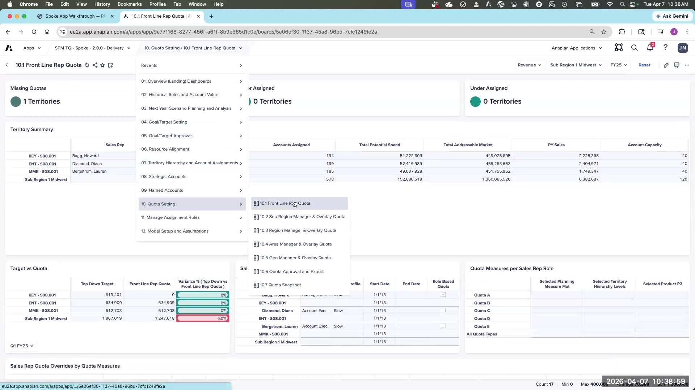
Section 10 is where territory targets translate into individual rep quotas. This is one of the most complex and most frequently misunderstood areas of the app. Take your time here.
The most important page in Section 10 shows each rep's quota by planning measure, their ramp multiplier schedule, and any measure-level overrides. Ramp overrides per measure per seller are also available here.
Quota Composition
For each sales role, quotas are built as follows:
- Quota types: Each role can have multiple quota types (e.g., Bookings Quota, New ARR Quota). Keep this under 3 per role — ideally 2. Every additional quota type multiplies complexity for every downstream process.
- Planning measure mapping: Which planning measure feeds each quota type
- Product/BU selection: If targets were set by product, which product(s) apply to this role's quota. Leaving blank = all products.
- Territory level: Which tier's target becomes this role's quota (e.g., a rep assigned to T5 picks up the T5 target; a manager assigned to T4 picks up the T4 target)
Multi-Territory Reps
When a rep covers more than one territory (common with overlay roles or coverage gaps during in-year changes), their quota picture gets more complex:
- The territory quota view shows the quota per territory — it doesn't consolidate across multiple territories per rep
- The Calc Quota by Quota Types module (dimensioned by Employee × Quota Type × Time) consolidates a rep's full quota across all territory assignments — this is the primary export for CRM, ICM, and HR systems
- When a rep covers 3 territories with 33% assignment each, this module shows their full blended quota; the territory view only shows their quota for each individual territory
For rep-facing quota letters and ICM feeds: always use the Calc Quota by Quota Types module — it gives the full picture. For territory management and assignment validation: use the territory quota view — it's easier to troubleshoot per-territory.
Quota Review
Two views for reviewing quotas:
- Territory quota view: Shows all reps assigned to a territory and their quota amounts by period. Territory-centric — doesn't consolidate across multiple territories per rep.
- Calc Quota by Quota Types module: Dimensioned by Employee × Quota Type × Time. This is the primary export module for downstream systems (CRM, ICM, HR). If a rep covers 3 territories in a year, this view consolidates their full quota picture.
Section 11. Rule-Based Account Assignment
Navigate to Section 11 — rule engine for attribute-based account assignment
Define attribute-based rules per territory to automatically identify and assign matching accounts. Powerful for large account universes where manual assignment isn't feasible.
Eligibility Criteria: Narrows the full account universe to the relevant subset before matching. Example: "Only accounts in the Commercial segment" reduces 500K accounts to 100K before running rules.
Attribute Weighting: When multiple territories have overlapping rules, weighting determines priority. The guiding principle: smaller geographic scope = higher weight (zip code > city > county > state > country). More specific rules win ties.
Matching Criteria: Per-territory rules using list-formatted attributes (configured in the Configurator). As you add criteria, the "total eligible accounts" count updates in real time.
Review before executing: Before running the assignment, review the matched accounts to confirm they're correct. Then execute to move them to the territory.
V3 Inheritance Rules: Define a rule at a parent territory — all child territories inherit it. In V2 you must define the rule on every territory individually.
The Optimizer (another assignment method) is accessed via Section 3 → 3.7–3.9. Run it from the Optimizer Setup page; results import into a scenario for comparison before committing to the current assignment. See the Scenario Planning section above.
Model Assumptions and Inputs
Navigate to Assumptions → Model Assumptions and Inputs
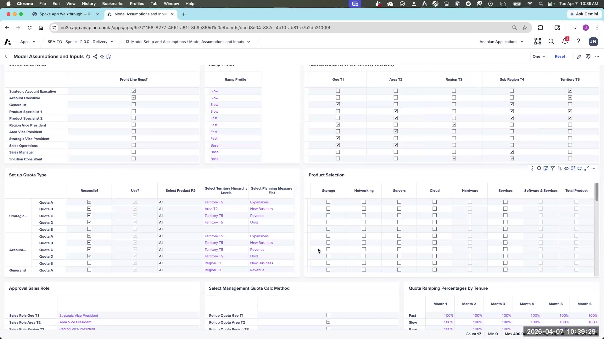
This is the key admin page for global model parameters, mappings, and configuration values. It's the first place to look when something in the model seems off. Key settings found here:
- Current Period: Sets the active planning period for the model
- Target Setting Methodology: Top-down or bottoms-up (currently universal — not per planning measure; adding the planning measure dimension is a small extension)
- Alert Thresholds: For territory capacity warnings
- Sales Role Definitions: Which roles are applicable at which hierarchy levels
- Ramping Profiles: Multiplier schedules for new hire quota ramp (3 profiles out of the box)
Administration
Data Loads
The generated app includes a "load everything" action that runs all ~62 import actions in sequence. Best practice: replace this with per-object actions.
- Create separate buttons/actions for: Account refresh, Employee refresh, Opportunity refresh, Territory refresh
- Admins can be deliberate about what to reload and when
- Errors are easier to isolate (if Accounts fail, you know immediately — you don't have to hunt through 62 actions)
- Many of the 62 generated actions are one-time initialization — they don't need to be in the regular load process
New Year Initialization
At the start of each planning year, run the initialization actions to:
- Re-load the current territory hierarchy from source
- Re-load account-to-territory assignments (if the territory attribute exists on accounts)
- Re-initialize the leaf-level and leaf-1 employee assignments from the prior year baseline
Seasonality
Defines how annual or quarterly targets break down to monthly quotas. Three options:
- Prior Year Seasonality: Use last year's actual monthly distribution pattern
- Straight Line: Divide equally across months (e.g., annual ÷ 12)
- Manual Input: Admin enters the monthly percentages directly
Seasonality typically differs by geography (APAC vs. EMEA holiday schedules) or by industry/segment (different buying cycles). Configure at the appropriate tier in the Configurator.
Role-Based Quota
If role-based quotas are applicable (all reps with the same role in the same region share the same quota regardless of territory), configure the quota values and applicable levels here. V3 has a more intuitive interface for this.
You've walked the full spoke app. Now design a 15-minute customer demo:
- Which 3–4 sections tell the most compelling story for a Sales Ops audience?
- What's your opening hook — the first thing you show that makes the customer lean in?
- Which sections would you skip or time-box to stay in 15 minutes?
- What's the one question you want the customer to ask after your demo?
Write out your demo sequence and be ready to walk through it with a partner.